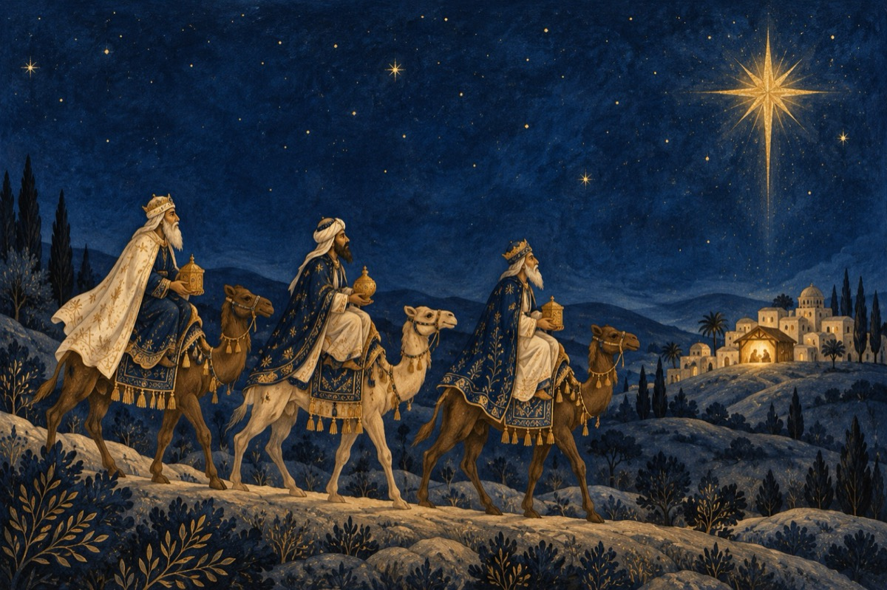

De Crăciun
Crăciunul e-n sărbătoare
Iată-ne-n ajun
Se cuvine o urare
Bine te-am găsit, om bun!
Colo-n jurul bradului
Cu lumini împodobit
Armonia cântului
Om bun, bine te-am găsit!
Colindăm de la fereastră
Cu cântec și bucurie
Belșug să aveți în casă
Domnu-n grijă să vă ție!
În această noapte sfântă
Se naște pruncul ISUS
Veste de la Dumnezeu primită
Așa este cum s-a spus!
Steaua sus răsare
Ca o taină mare
Și se duce spre apus
Unde s-a născut ISUS
Trei crai de la răsărit
Sub stea au călătorit
Și-acolo când au sosit
Pe Mesia l-au găsit
Și pe Maica Domnului
Slavă Betleemului!
Cu aur l-a-mpodobit
Și în cântec l-au slăvit!
Doamne bine ai venit
Noi de mult te-am așteptat
Poporul tău mântuit
Ai sosit cu-adevărat
Doamne, bine ai venit!
Vasile Groza